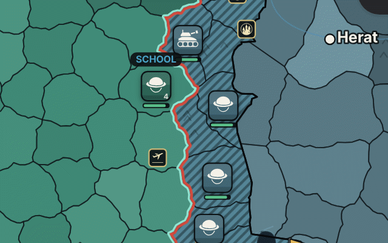
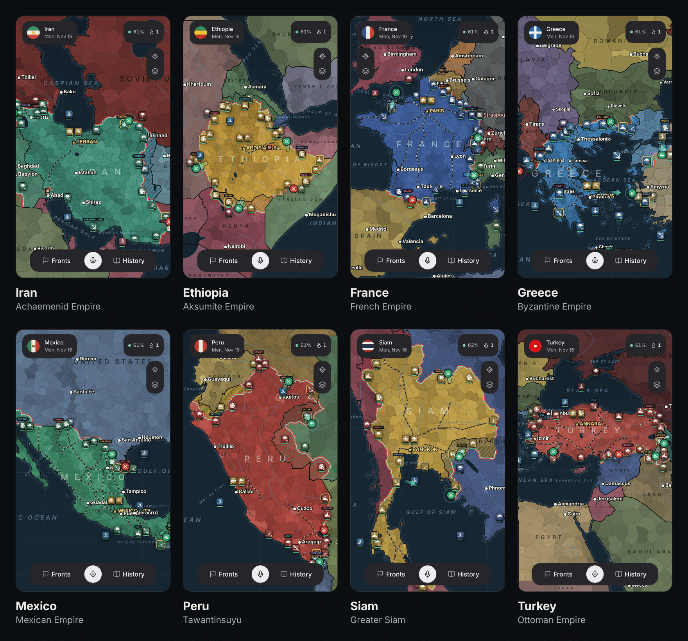
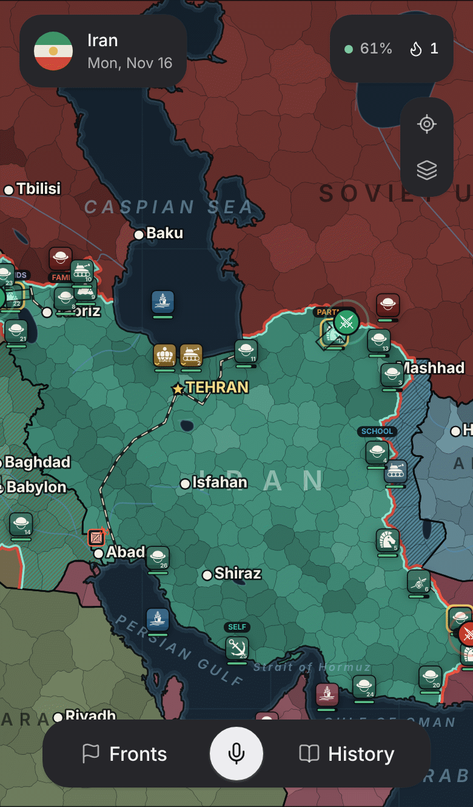
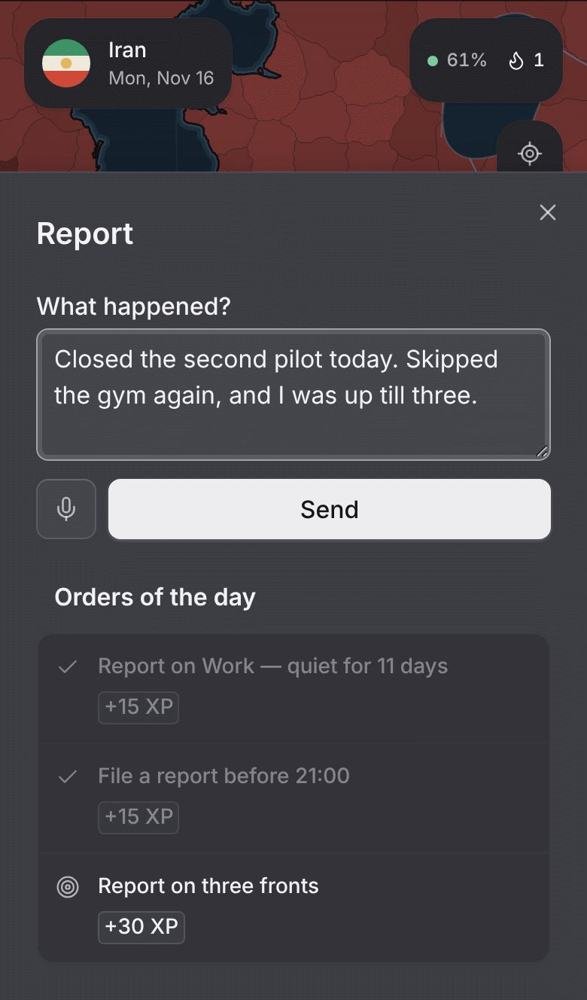
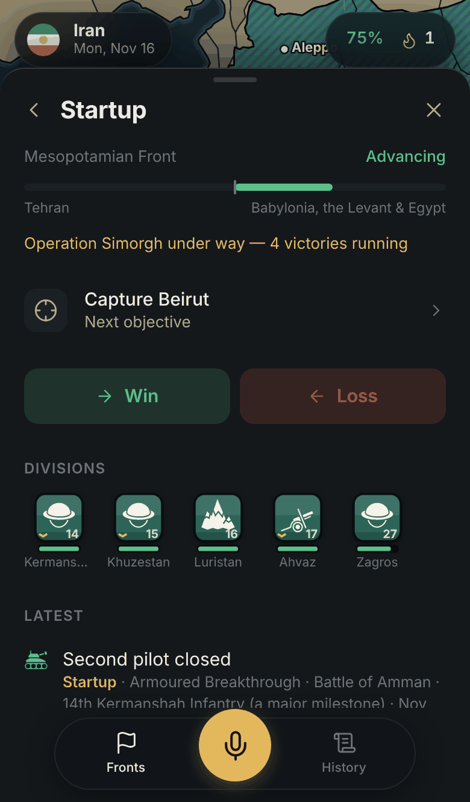
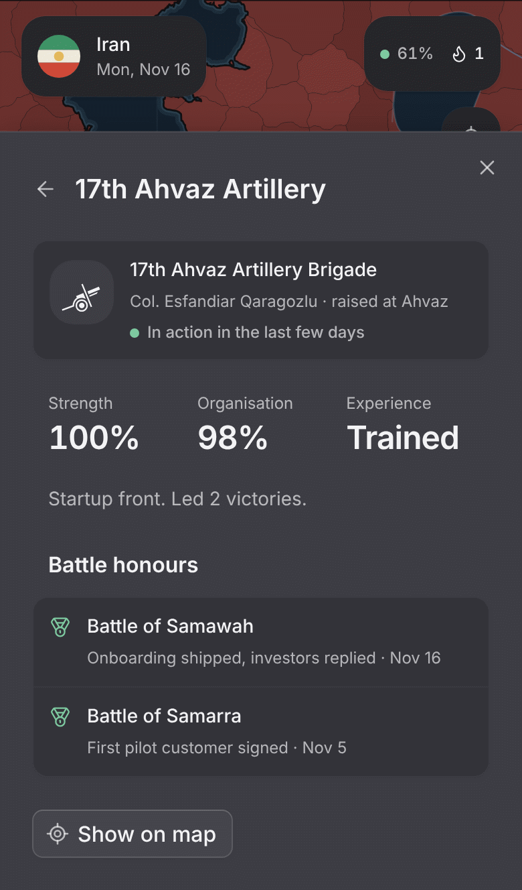
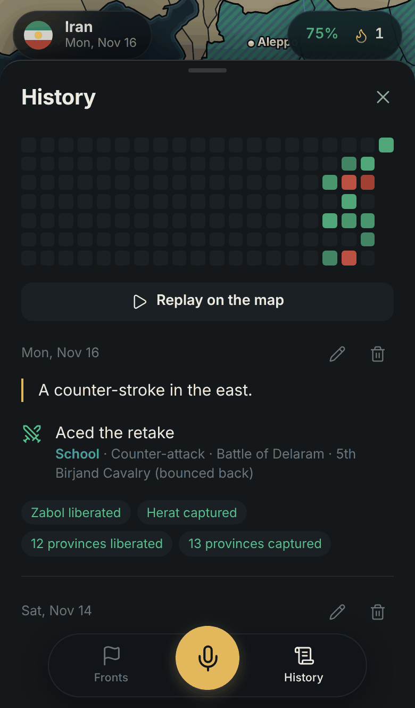

Open source · self-hosted · private
Your life,
as a war map.
Home Front puts school, family, work and health on the borders of a 1936 map. Pick one of eight countries. Say what happened today. A general staff judges it, and the front moves, province by province.
No sign-up. The demo runs entirely in your browser.

Failed the calculus midterm. I didn’t study.
SchoolEnemy Tank BreakthroughBattle of Birjand
Enemy armour breaks the line in the east.
“Heavy tank attack on the school front. They’re 200 km from Tehran.”
How it works
Three steps, one button.
-
1Say it
Tap the microphone or type. One line or the whole day, in your own words. “Yesterday I…” is dated correctly.
-
2The staff judges it
An LLM general staff sorts it by front, decides win or loss and how big, and states its reason in your terms before it picks a battle type. Disagree? Edit or undo in one tap.
-

3The map moves
Fronts advance or collapse province by province. Cities fall and are retaken, and a named division takes the honour or the blow.
Say it like this
Plain sentences in. Communiqués out.
The battle type always follows from what happened. The staff states the reason first, then picks the type that matches.
I was sick all week.
Harsh ConditionsNobody’s fault. The line gives a little.I finally understood recursion.
Intelligence CoupAn insight. The next attack hits harder.Bombed the midterm. Didn’t study.
Enemy Tank BreakthroughA major failure. Provinces are lost.Slept four hours again.
Supply Hub BombedOut of energy. Front supply drops.Mum lent me the deposit.
Allied Aid ArrivesResources you did not have yesterday.
Judged by the LLM staff. Without a model, a simpler offline keyword judge takes over.
Features
A tracker with a general staff.
Seven fronts you name
School, family, startup, health. Each border is one part of your life. Rename or pause any of them.
Voice or text
Dictate on the walk home or type one line. Several fronts in one sentence is fine.
A judge that explains itself
Every verdict carries its reason, saved with the entry and shown in History.
Named divisions, battle honours
The 5th Birjand Cavalry leads the counter-attack, gains experience and keeps the battle on its record.
Operations, weather, old provinces
Three wins in a row launch a named operation. Snow closes the passes in winter. Retaken regions return under the names the old empire gave them.
Streaks, ranks and daily orders
A day streak, divisions that rise from Green to Elite, decorations, and the staff’s read on where to act next.
Share cards
Save the map as an image with a short communiqué, ready for the group chat.
History and replay
A calendar of every entry, each one editable, and the whole war replayed on the map.
Private and self-hosted
One password, your own machine. The campaign is a single JSON file you can back up.
OpenAI or local models
Bring an OpenAI key, or point it at Ollama and keep every word on your own hardware.
Installable on a phone
Add to Home Screen from Safari or Chrome. Full screen, with an offline shell and no app store.
Phone and desktop, light and dark
A sheet under the map on a phone, a panel beside it on a wide screen. Light, dark or automatic.
Countries
Eight countries, each with an empire to restore.
Every country has its own 1936 borders, seven fronts, divisions and place names. Change country in Settings. Each one keeps its own campaign.

- IranAchaemenid Empire
- EthiopiaAksumite Empire
- FranceFrench Empire
- GreeceByzantine Empire
- MexicoMexican Empire
- PeruTawantinsuyu
- SiamGreater Siam
- TurkeyOttoman Empire
The app
Three screens and a microphone.
Screenshots at phone size, taken from the demo campaign in Iran.





Self-host
Clone, install, start.
Node 20 or newer. The interface builds itself the first time you start it.
- Works without a key, using the offline judge.
- Docker and local models (Ollama) are covered in the README.
- Put HTTPS in front of it, a tailnet works well, to use the iPhone microphone.
# 1. get it
git clone https://github.com/sam-siavoshian/hoi4-irl.git
cd hoi4-irl
# 2. set a password
cp .env.example .env
# 3. install and run it (localhost:8080)
npm install
npm startPrivacy
Your key and your week stay on your machine.
The key never reaches the browser
The server holds it and makes the model calls. The app shows a password box and nothing else until you log in.
The campaign is one file
Everything you report lives in
private/state.jsonon the host. Copy it to back it up. Delete it to forget.You choose where the words go
With OpenAI, the text of each report is sent there to be judged. With a local model, nothing leaves the machine.
No accounts, no analytics
Not in the app, and not on this page, which loads nothing from third parties.
FAQ
Fair questions.
Is it a game?
No. It is a tracker dressed as one. Nothing happens unless you report it, apart from units recovering and damage being repaired over time. The only way to advance is to have a better week.
Does it need an API key?
No. Without one it uses a simple offline keyword judge and your keyboard’s dictation key. With an OpenAI key or a local model you get the full staff: reasons, battle types that fit, and voice transcription.
Can I change the map?
You can rename every front and pause the ones you do not need. Eight countries are included: Iran, Turkey, Greece, France, Ethiopia, Siam, Peru and Mexico, each with its 1936 borders and an empire to restore. Adding another is one file in the repository.
Is my data private?
Self-hosted, it sits on your machine behind your password, and search engines are told to stay away. In the demo, entries stay in this browser’s local storage and are sent nowhere.
Does it work on Android?
It is a web app, so it runs in Chrome on Android and can be added to the home screen from the browser menu. It is tested at iPhone size and on a desktop browser, so expect a rough edge or two elsewhere.